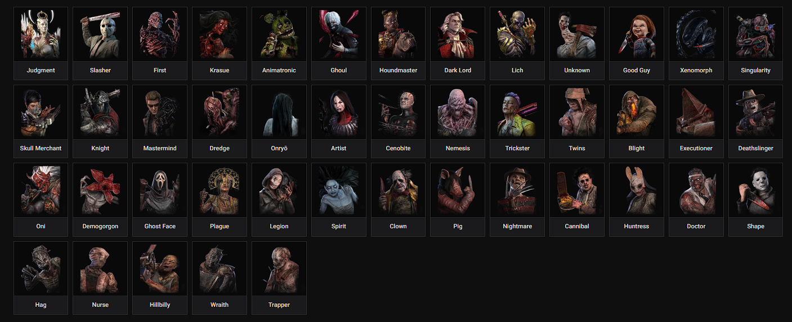
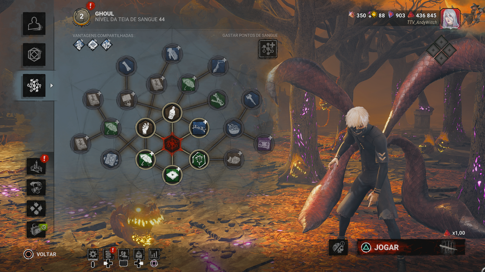
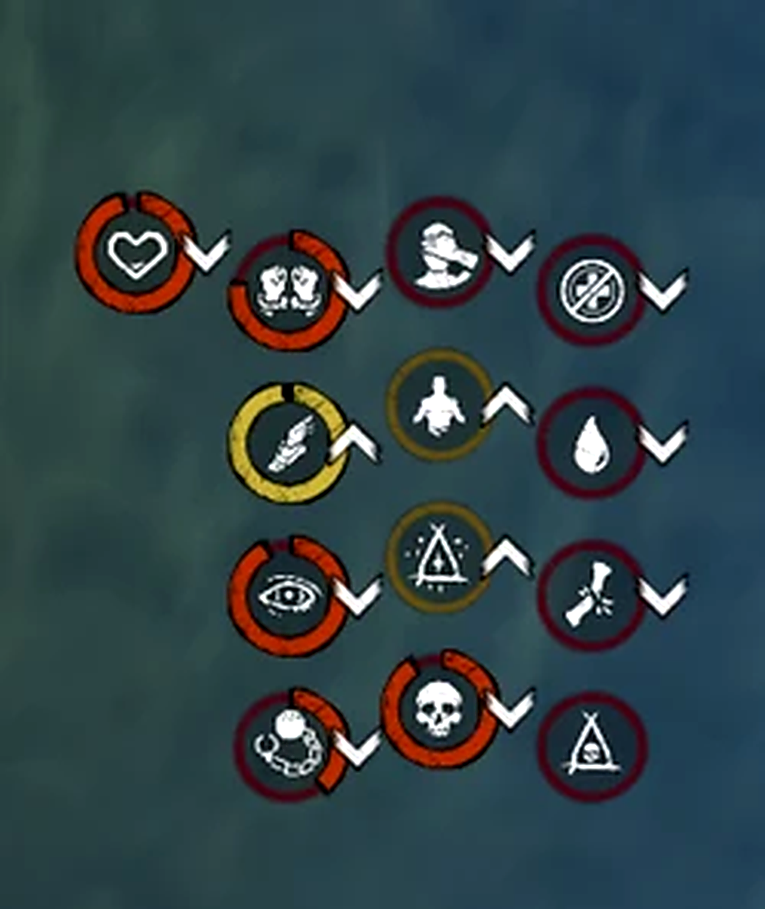

Fundamentos
O Killer administra tempo. Cada segundo perseguindo alguém é um segundo em que outros Survivors podem avançar objetivos.
Cada assassino possui três vantagens exclusivas que podem ser compartilhadas com outros assassinos por meio do Prestígio 1, 2 e 3. O poder especial é exclusivo de cada Killer e não pode ser transferido. A Caçadora arremessa machados; o Legião usa o Frenesi Selvagem para correr e ultrapassar obstáculos. Conhecer essas diferenças é essencial para jogar e sobreviver.

A Teia de Sangue é onde você investe Pontos de Sangue para subir níveis, conseguir vantagens, itens, complementos e oferendas. Cada personagem possui sua própria progressão. Ao concluir o nível 50, você pode avançar seu Prestígio.

Vantagens, complementos que alteram o funcionamento do poder especial e oferendas para a partida.
No Prestígio 1, 2 e 3, as três vantagens exclusivas ficam disponíveis nos respectivos níveis para os demais assassinos. Também é possível melhorar vantagens desbloqueadas na Teia.
Durante eventos como Halloween e aniversário, podem surgir recursos e oferendas temáticas por tempo limitado. Seus efeitos e condições de uso variam conforme o evento; confira a descrição antes de equipar.
Encontre, pressione e tome decisões melhores em cada perseguição.
O Killer administra tempo. Cada segundo perseguindo alguém é um segundo em que outros Survivors podem avançar objetivos.
Use pistas do mapa e das ações dos Survivors. Ao encontrar alguém, pense se aquela perseguição é uma boa oportunidade ou se vale procurar outro alvo.
O objetivo não é vencer toda perseguição instantaneamente. É reduzir opções, prever rotas e converter pressão em um down.
Mindgame é uma decisão baseada na leitura do adversário: esconder sua intenção, mudar sua rota ou induzir uma escolha.
Pressão vem da combinação de downs, hooks, movimentação e controle dos geradores. Não dependa de uma única perseguição.
Com o último gerador concluído, avalie rapidamente posições, portas, Survivors e oportunidades de conversão.
Os ícones indicam benefícios, penalidades e condições especiais. Consulte o nome em português e inglês e descubra o que cada efeito significa. A duração e as condições variam conforme a vantagem ou poder.
